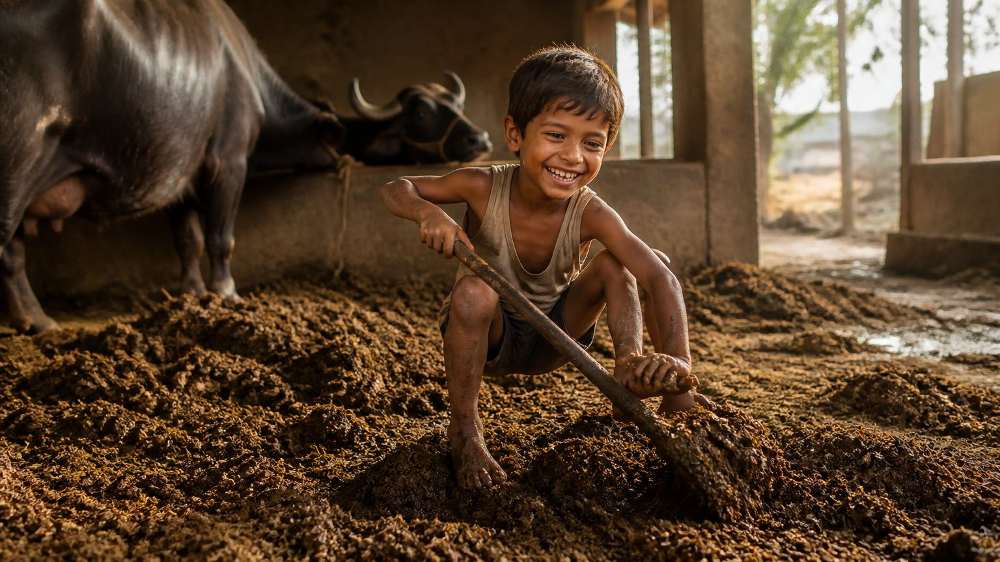

आचार्य उपेंद्र जी कहते हैं कि या तो तुम संसार को छोड़ोगे, या संसार तुम्हें छोड़ देगा। इतना पक्का है।
यह वाक्य सुनने में कठोर लगता है, पर इसमें जीवन का सबसे सीधा सत्य छिपा है। आइए, इस सत्य को धीरे-धीरे खोलकर देखें।
क्या कुछ भी हमेशा रहता है?
आपने नई गाड़ी ली। धीरे-धीरे वह भी पुरानी होती जाती है। वस्तु, व्यक्ति, स्थान, सब कुछ बदलता है। और एक दिन ऐसा आता है जब स्वयं हमें ही सब कुछ छोड़कर जाना पड़ता है।
रिश्ते भी ऐसे ही हैं। बेटा बड़ा होता है, अपनी कामनाएँ पूरी करने दूसरे देश जाता है, मित्रों के साथ बाहर जाता है। वह उतना समय हमारे साथ नहीं रहने वाला।
फिर भी हम हर चीज़ को स्थायी मानकर उसमें अपना सब कुछ लगा देते हैं। आचार्य जी का सूत्र सरल है: कर्तव्य समझकर करो, और छोड़ दो। यही न कर पाना वह समस्या है जिसके कारण मनुष्य पितर (मृत्यु के बाद अतृप्त भटकने वाली आत्मा) बनता है।
आप किस चीज़ या रिश्ते को मन ही मन "हमेशा के लिए" मानकर बैठे हैं?
निन्यानवे साल का करार
एक निन्यानवे वर्ष का व्यक्ति निन्यानवे वर्ष के लिए ज़मीन का करार बड़ी खुशी से करता है। मानो वह अभी और निन्यानवे साल भोगने के लिए जीने वाला है।
आचार्य जी पूछते हैं, यह धैर्य उसके भीतर आता कहाँ से है? अपने ही जीवन की कोई गारंटी नहीं, लेकिन गारंटी वाला सुख खोजने के लिए वह चीज़ों के पीछे दौड़ रहा है।
तो क्या कुछ भी न खरीदें?
नहीं। आचार्य जी स्पष्ट करते हैं कि ऐसा नहीं कहा गया कि चीज़ें मत लो। खरीदो, पर उनका स्वभाव समझो कि वे अस्थिर हैं।
शास्त्र के पहले श्लोक में पहले ही कहा गया था कि भोग (सांसारिक सुख और अनुभव) चलते हैं, परंतु उन्हें योग-सामग्री में बदलो, यानी ऐसी सामग्री में जो भीतर की यात्रा में सहायक हो। दूसरा श्लोक भोग का स्वभाव बताता है।
भोग में जो योग वाला अंश है, वह मुक्ति की ओर ले जाता है। पर अगर भोग केवल भोग ही रह गया, योग-सामग्री में नहीं बदला, तो वह मोक्ष तक पहुँचेगा ही नहीं।
दूसरा श्लोक साफ़ कहता है: यह सब अस्थिर है। स्थिर कुछ भी नहीं, आपकी समस्याएँ भी नहीं। और इसी अस्थिर के पीछे प्राण गँवा देना, यही पितर बनने का रास्ता है।
सिक्स पैक से वन पैक तक
यहाँ आचार्य जी अपने विनोदी अंदाज़ में बात समझाते हैं। विवाह के समय शायद आपके पास सिक्स पैक था। फिर उम्र बढ़ी, और वही सिक्स पैक एक बड़ा-सा "वन पैक" बन गया।
विवाह के कुछ साल बाद पत्नी गर्भवती जैसी दिखती है, और कुछ और साल बाद पति गर्भवती जैसा दिखने लगता है! हँसी की बात है, पर संदेश गहरा है: शरीर बदलता है।
दशा बदलती है, आर्थिक स्थिति बदलती है। बाल काले से सफ़ेद होते हैं। झुर्रियाँ आती रहती हैं। कुछ भी स्थिर नहीं रहता।
अहंकार का चश्मा
जो इस अस्थिर संसार को देखकर भी उसे स्थिर मानता है, वही सबसे पहले पितर बनता है, क्योंकि उसकी कामना और वासना अलग ही रहती है।
वह पत्नी पर चिल्लाता है, "तू पहले जैसी सुंदर नहीं रही।" आचार्य जी कहते हैं, अरे, तू भी तो अंकल हो गया! पर उसकी नज़र अब भी युवावस्था में अटकी है।
उसे लगता है बाकी सब बदल रहा है, क्योंकि अहंकार के कारण वह खुद को नहीं देख पाता। कभी साढ़ेसाती आती है, कभी उच्च की दशा, कभी नीच की। सब अस्थिर है।
क्या आप भी दूसरों के बदलाव तो देखते हैं, पर अपने बदलाव से आँखें चुरा लेते हैं?
अस्थिरता में स्थिर क्या है?
पहले यह जानो कि माया (परिवर्तनशील संसार) अस्थिर है। फिर उस अस्थिरता में कुछ स्थिर खोजना होगा। और वह स्थिर है परमात्मा।
पत्नी थी, तो वह देवी थी। पति था, तो वह शिव था। हर उतार-चढ़ाव में, प्रेम ही परमात्मा है। आचार्य जी बताते हैं कि प्रेम परमेश्वर था, क्षमा परमेश्वर थी, शांति परमेश्वर थी, और उसी परमेश्वर को खोजना था।
अपने से पूछिए: मेरा प्रेम किस पर टिका था? पैसे पर या व्यक्ति पर? अगर पैसे पर, तो परिस्थिति बिगड़ते ही रिश्ता टूटने वाला है। जो चीज़ें परमेश्वर के तुल्य हैं, वही शाश्वत हैं। बाकी सब बदल रहा है।
बाल रंगने से विग तक
आप बालों को जितना काला करते जाएँगे, एक दिन वे बाल ही चले जाएँगे। फिर गंजे सिर को तो काला नहीं करेंगे! फिर विग आएगा। कुछ समय बाद विग को भी रंगना पड़ेगा, क्योंकि धूल से वह भी खराब होगा।
पहले दाँतों का इलाज, फिर नकली दाँत। सब कुछ अस्थिर है। प्रश्न बस इतना है: हम इसे स्वीकार करेंगे या नहीं?
मेरा मोक्ष क्यों नहीं होता?
जो अस्थिर को स्थिर मानता है, उसे यह भी समझ नहीं आता कि उसका अपना मन भी अस्थिर है। ऐसे लोग जल्दी पितर बनते हैं, क्योंकि मृत्यु के समय भी वे स्वयं को स्वीकार नहीं कर पाते।
दूसरे श्लोक की सीख साफ़ है: जो स्थिर है, उसे पकड़ो। जो अस्थिर है, उसके पीछे बहुत मत भागो। जब तक साथ है, तब तक साथी है; चला गया, तो चला गया।
वानप्रस्थ: जंगल नहीं, जीने का ढंग
हमारी परंपरा में चार आश्रम बताए गए: ब्रह्मचर्य, गृहस्थ, वानप्रस्थ और संन्यास। ब्रह्मचर्य के बाद गृहस्थ, और गृहस्थ के बाद वानप्रस्थ।
आचार्य जी समझाते हैं कि वानप्रस्थ का अर्थ जंगल जाना नहीं है। वन में मनुष्य जैसे निर्लिप्त रहता है, वैसे ही घर में रहना शुरू करना है।
पर्दा लाल हो, हरा हो या नीला, यह बहू पर छोड़ दो। सोफ़े का रंग वह जैसा चाहे। मुझे जैसा जीना था, जी लिया। उसे अपने ढंग से जीने दो।
पचास के बाद धीरे-धीरे अलिप्त होना क्यों?
क्योंकि एक दिन, साठ, सत्तर या अस्सी की उम्र में, साथ रहने वालों में से कोई एक चला ही जाएगा। तब बड़ा झटका लगेगा, क्योंकि हमेशा चिपककर रहने की आदत थी, विरक्ति (आसक्ति से धीरे-धीरे मुक्त होना) कभी आई ही नहीं।
यह नाता भी अस्थिर था। जो यह नहीं समझेगा, उसके पितर बनने की संभावना बढ़ जाती है, मोक्ष नहीं होता। और पचहत्तर की उम्र में रोना शुरू होता है, "अब मेरा क्या होगा?"
पचासवीं सालगिरह पर एक कड़वा प्रश्न
लोग बड़ी खुशी से शादी की पचासवीं सालगिरह मनाते हैं। आचार्य जी कहते हैं, अध्यात्म की दृष्टि से यह व्यर्थ है। पच्चीस में विवाह किया, तो अब पचहत्तर के हो गए। अब भी कैसा गृहस्थ है तू?
होना यह चाहिए: "पचास के बाद मैं विरक्ति की ओर जा चुका था।"
ध्यान दीजिए, इसका अर्थ पत्नी को छोड़ देना नहीं है। आचार्य जी ने ऐसा नहीं कहा। बात भावना की है। अगर भावना अब भी गृहस्थ वाली है और छिहत्तर-अठहत्तर में कोई एक चला गया, तो वही पहले पितर बनेगा, क्योंकि उसे यह संबंध स्थायी लगने लगा था। एक न एक दिन यह संबंध जाना ही है।
इतनी आसक्ति अगर अंत तक रही, तो यही दादाजी बाद में पितर बनकर परिवार को कष्ट देंगे।
अगर आप पचास पार हैं, तो क्या आपकी भावना अब भी केवल गृहस्थ वाली है, या भीतर विरक्ति की यात्रा शुरू हुई है?
एक महत्त्वपूर्ण सत्य
आचार्य जी इसे "बहुत-बहुत महत्त्वपूर्ण रहस्योद्घाटन" कहते हैं। पचास के बाद यदि वानप्रस्थ की ओर नहीं बढ़े, तो एक दिन भीतर कुछ टूटेगा, और वह बहुत महँगा पड़ेगा।
यदि आध्यात्मिक जीवन अभी ज़रा भी शुरू नहीं किया, तो बाद में बहुत कष्ट होता है। और अक्सर उसके बाद दूसरा साथी भी जल्दी ही चला जाता है।
मुख्य सीख
- संसार को तुम छोड़ोगे, या संसार तुम्हें छोड़ देगा; कुछ भी हमेशा नहीं रहता।
- चीज़ें खरीदना या भोगना गलत नहीं, पर उनका अस्थिर स्वभाव समझो और भोग को योग-सामग्री में बदलो।
- शरीर, धन, दशा, संबंध और मन, सब अस्थिर हैं; अहंकार हमें अपना बदलाव देखने नहीं देता।
- अस्थिरता में स्थिर केवल परमात्मा है: प्रेम, क्षमा और शांति परमेश्वर के तुल्य और शाश्वत हैं।
- वानप्रस्थ का अर्थ जंगल जाना नहीं, घर में रहते हुए धीरे-धीरे अलिप्त होना है।
- पचास के बाद विरक्ति की ओर बढ़ो और आध्यात्मिक जीवन शुरू करो, वरना अंत में आसक्ति मनुष्य को पितर बनाती है और मोक्ष रुक जाता है।
आगे पढ़ें

कभी आपने गौर किया है कि कुछ लोग हर हाल में मुस्कुरा लेते हैं, और कुछ लोग सब कुछ मिलने पर भी शिकायत ढूँढ लेते हैं? आचार्य जी एक छोटी-सी कथा से समझाते…

ज्ञान आपको पाप करने से कभी नहीं रोक सकता। फिर भी शास्त्र कहते हैं: ज्ञानी को मोक्ष।

पितृ पक्ष आते ही कई प्रश्न मन में उठते हैं। पितर कौन हैं? श्राद्ध (श्रद्धा से किया गया पूर्वजों का स्मरण) और तर्पण (जल अर्पण) का वास्तविक अर्थ क्या…